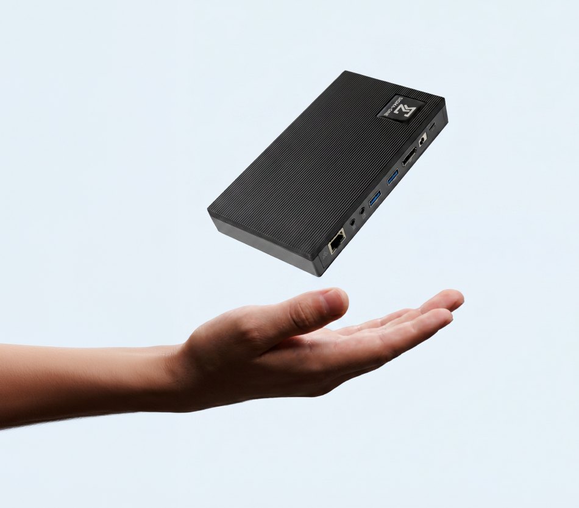
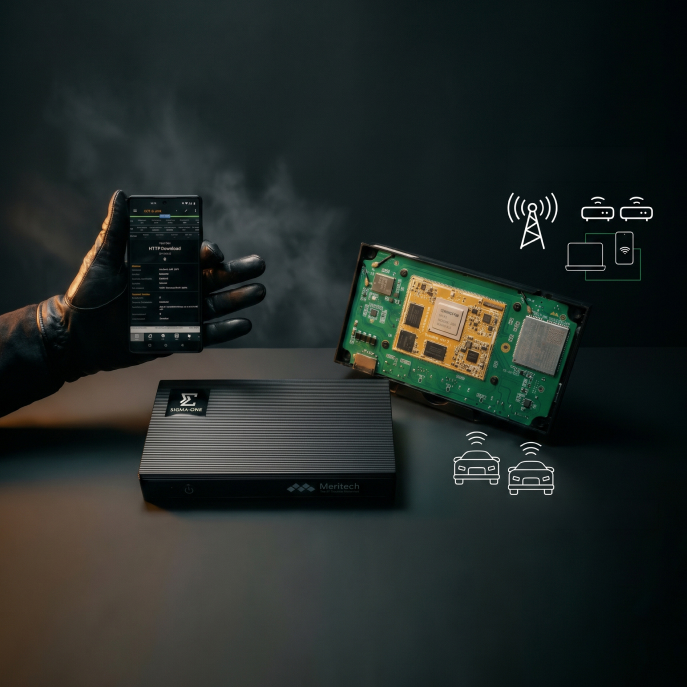

Wireless Portfolio / Capture & Automate
Sigma-One
Sigma-One is a ruggedized hardware and software solution for capturing modern communication from COTS handsets, IoT devices, and connected car TCUs. Near real-time L1–L4 decode. USB-powered. Drone-deployable. Fully remote. Wherever a device connects to a network, Sigma-One can measure it.

Overview

Network quality measurements have assumed an engineer at the wheel. Sigma-One removes that assumption — capturing modem communication in locations where a test rig or an engineer simply cannot go.
Near real-time L1 to L4 modem communication captured and deciphered. Two data streams: optimized files streamed live to Centra-SD for cloud performance monitoring, and detailed deciphered binary files stored locally for advanced report generation. One ultra-compact, USB-powered unit.
Device Types
Sigma-One is designed specifically for testing commercial off-the-shelf handsets, IoT devices, and connected car telematics units. The same ruggedized unit handles all three — connecting via USB to the device under test and decoding the modem communication directly.
Capture modem data from commercial off-the-shelf smartphones through the diag port — measuring the network exactly as a subscriber experiences it, on the device they carry. No engineering sample required, no custom firmware.
Evaluate modem communication in IoT modules and cellular routers — capturing L1–L4 communication from the chipset in real deployment conditions with no test equipment overhead.
Real-time monitoring of TCU communication from connected vehicles. Decode modem data directly from the vehicle's telematics unit — in the car, on the road, without connecting to the vehicle's diagnostic port from a static workstation.
Automation
Sigma-One test scenarios are compiled into automated scripts that execute without manual intervention. Define the execution model that fits the campaign — single, sequential, or parallel — and the platform runs from start to end, unattended.
Continuous 24×7 monitoring across Mobile and Web apps surfaces anomalies automatically. The alarm fires before a subscriber notices — and long before a complaint is filed.
Real smartphones, real apps, real user conditions. Speed test, video streaming, social media — tested the same way a subscriber uses them, not through a KPI proxy.
Create custom test scenarios and run them simultaneously across a fleet of 1,000+ devices via Seetest Cloud. Coverage at scale without proportional headcount.
Sigma-One captures L1–L4 modem communication from COTS handsets, IoT devices, and connected car TCUs — USB-powered, drone-deployable, and fully remote.
Three deployment scenarios where only Sigma-One can reach — no engineering sample, no test rig, no engineer on-site.
Evaluate vehicle telematics communication in real driving conditions. Decode modem data from the TCU, monitor link switching between towers, SIM selection, and LTE data flows — without modifying the vehicle or removing it from service.
Evaluate Android-based development modules with scripting and automation. Run tests single, sequential, or parallel against a fleet of IoT boards — capturing L1–L4 communication at the chipset level in real deployment conditions.
Deploy measurement capability on drones or in infrastructure locations too hazardous or remote for test engineers. USB-powered, fully remote, standard test scenarios execute unattended and upload on command.